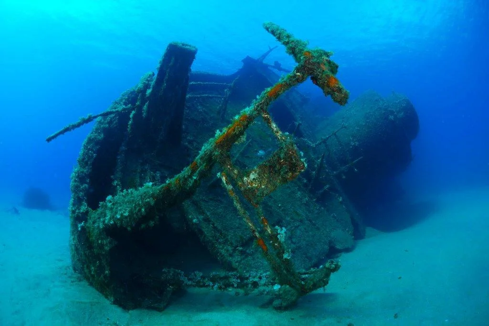
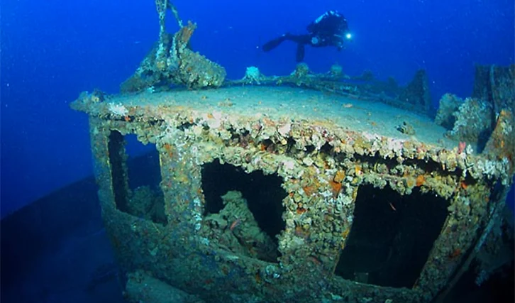
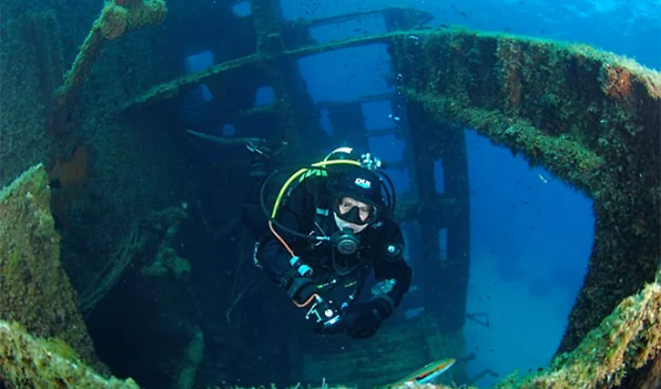

MÄRZ 2026 · VON ANJA
Clubreise: eine Woche Elba
Zwölf Mitglieder, 18 Tauchgänge und ein Wrack, über das noch lange geredet wird: unser Reisebericht.

Dass es dieses Jahr nach Elba gehen sollte, stand schon auf der Jahreshauptversammlung fest. Ende März war es dann so weit: zwölf Sharkeys, zwei voll beladene Autos und eine Fähre ab Piombino.
Getaucht wurde jeden Tag, meist zwei Gänge am Vormittag. Highlight der Woche war ganz klar das Wrack der Elviscot vor Pomonte, auf nur zwölf Metern Tiefe, also auch für die frisch Brevetierten gut machbar. Sicht: gefühlt endlos.


Abends wurde gekocht, gefachsimpelt und die Logbücher wurden gefüllt. Und ja: Über wen beim Nachttauchgang der Oktopus hinweggeschwommen ist, wird hier nicht verraten. Dafür muss man schon zum Stammtisch kommen.
Danke an alle Mitgereisten fürs Organisieren, Fahren und Flaschenschleppen. Nächstes Jahr wieder? Nächstes Jahr wieder.